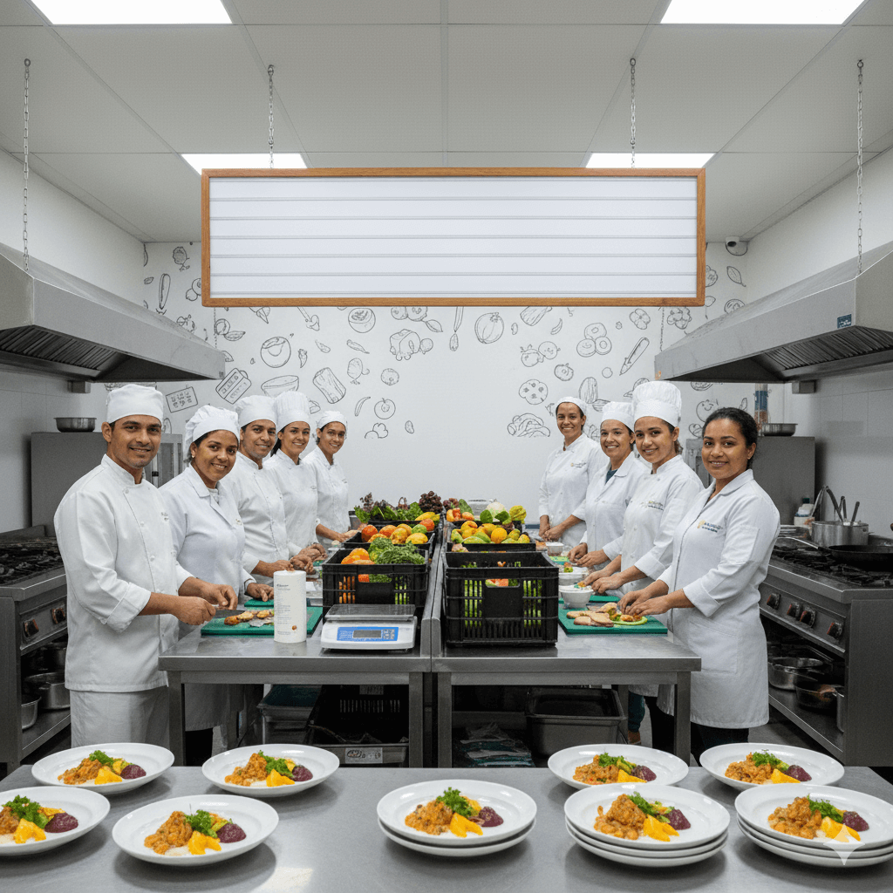

Missão
Combater a fome e o desperdício, garantindo a segurança alimentare nutricional de comunidades vulneráveis com refeições dignas.
Resgatamos alimentos que seriam descartados e, com o rigor da ciência da nutrição, criamos refeições balanceadas que combatem a fome e promovem a saúde.
Mais que comida, entregamos saúde e respeito.
A fome não é apenas a ausência de comida mas também a ausência de nutrientes essenciais. A "Prato Cheio, Futuro Certo" nasceu para combater a insegurança alimentar em suas duas frentes: a quantitativa e a qualitativa.
No Brasil, toneladas de alimentos perfeitamente bons são desperdiçados todos os dias, enquanto milhões de pessoas vivem em insegurança alimentar. A "Prato Cheio, Futuro Certo" nasceu para ser a ponte entre esses dois mundos.
Não somos apenas um banco de alimentos. Somos uma cozinha-escola social. Nossa equipe, com o olhar técnico de nutricionistas e a criatividade de gastrônomos, avalia, higieniza e transforma cada ingrediente resgatado. O resultado não é uma "cesta básica", mas sim um prato completo, balanceado e cheio de sabor.
Acreditamos que o acesso à alimentação de qualidade é um direito humano fundamental. Nosso trabalho é lutar por esse direito, um prato de cada vez.
Combater a fome e o desperdício, garantindo a segurança alimentare nutricional de comunidades vulneráveis com refeições dignas.
er referência em sustentabilidade alimentar, criando um ciclo completo onde nenhum alimento é desperdiçado e nenhuma pessoa passa fome.
Dignidade, Sustentabilidade, Nutrição, Transparência e Comunidade.
email: contato@ong.org.br
Telefone/whatsapp: (xx) xxxx-xxxx
Endereço: Rua xxxx, 100 - Centro - Londrina,PR
Leia nossos documentos públicos e veja como os recursos são aplicados.